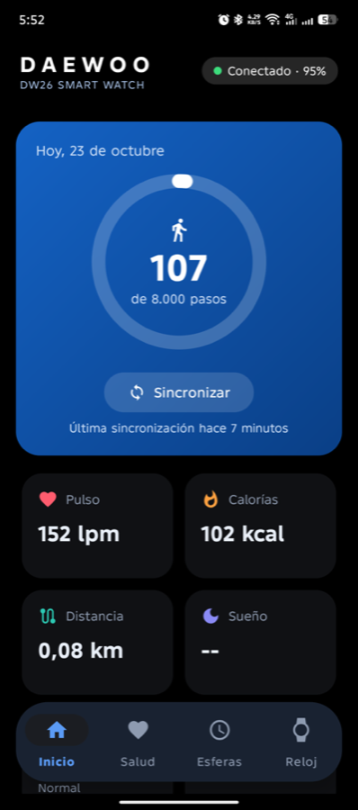
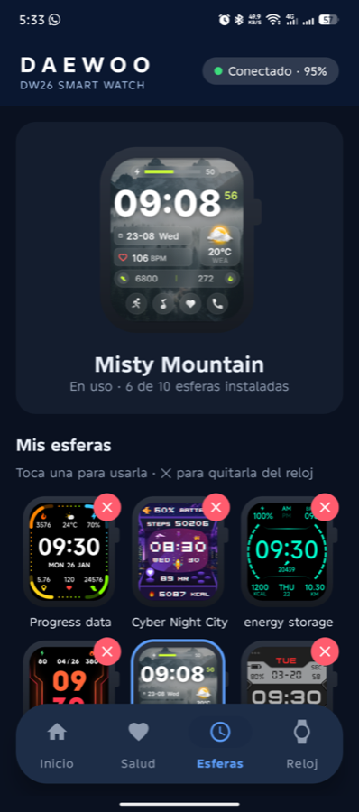
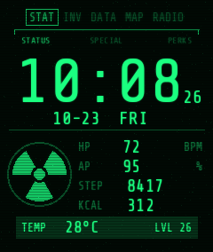

Pulsix conecta tu Daewoo DW26 por Bluetooth y se encarga de todo: salud, notificaciones, llamadas, música, clima, alarmas y esferas. Sin cuentas, sin anuncios, sin rastreo.
Pulsix pairs with your Daewoo DW26 over Bluetooth and handles everything: health, notifications, calls, music, weather, alarms and watch faces. No accounts, no ads, no tracking.


Pasos con meta, pulso, calorías, distancia, sueño por fases, estrés y SpO₂, con gráficos de 7 días.
Steps vs. goal, heart rate, calories, distance, sleep stages, stress and SpO₂, with 7-day charts.
WhatsApp, Telegram, SMS y más en la muñeca, con el nombre de quien llama y avisos de llamadas perdidas.
WhatsApp, Telegram, SMS and more on your wrist, with caller names and missed-call alerts.
Canción y artista en el reloj; reproducir, pausar, saltar y volumen desde la muñeca.
Song and artist on the watch; play, pause, skip and volume from your wrist.
Actual, por horas y de 6 días según tu ubicación, actualizado cada hora (Open-Meteo, sin claves).
Current, hourly and 6-day forecast for your location, refreshed hourly (Open-Meteo, no keys).
Hasta 10 alarmas con días de repetición, sincronizadas en ambos sentidos.
Up to 10 alarms with repeat days, synced both ways.
Haz vibrar el reloj desde la app, o haz sonar el teléfono desde el reloj.
Make the watch vibrate from the app, or ring the phone from the watch.

Una terminal verde fósforo con líneas de barrido CRT: hora, fecha, pulso (HP), batería (AP), pasos, calorías y temperatura, todo en vivo en el reloj. Se genera con un script, así que puedes editarla o crear las tuyas.
A green-phosphor terminal with CRT scanlines: time, date, heart rate (HP), battery (AP), steps, calories and temperature, live on the watch. It's generated by a script, so you can tweak it or build your own.
python3 -I tools/faces/pipboy/build.py
Un servicio mantiene el enlace y reconecta solo; sincroniza al conectar.
A background service keeps the link and reconnects on its own; syncs on connect.
Diseño plano y minimalista, con un modo negro puro para pantallas AMOLED.
Flat, minimal design with a pure black mode for AMOLED screens.
Tus datos de salud se quedan en el teléfono. Sin registro, sin anuncios.
Your health data stays on the phone. No sign-up, no ads.
adb. De ahí salen las librerías del reloj, que no se pueden redistribuir.adb. The watch libraries come from there and can't be redistributed.git clone https://github.com/MetalSyntax/Pulsix-Multiwatch.git cd Pulsix-Multiwatch tools/extract_sdk.sh ./gradlew assembleDebug
git clone https://github.com/MetalSyntax/Pulsix-Multiwatch.git cd Pulsix-Multiwatch tools/extract_sdk.sh ./gradlew assembleDebug
Solo una app puede estar vinculada al reloj: al usar Pulsix, VeryFit queda desvinculada. Sincroniza en VeryFit antes de cambiar.
Only one app can be bound to the watch: using Pulsix unbinds VeryFit. Sync in VeryFit before switching.